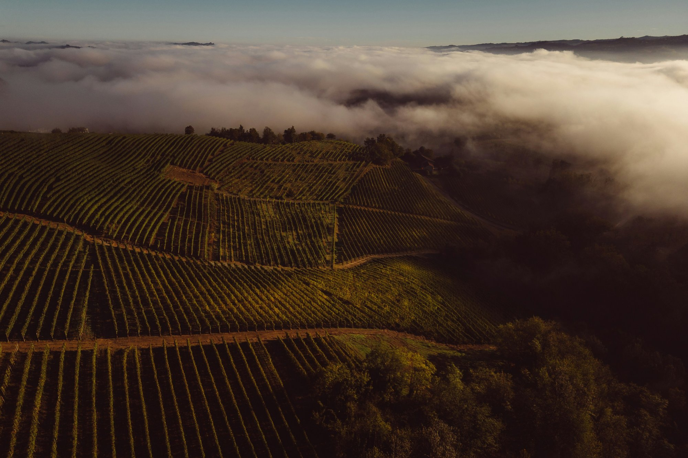
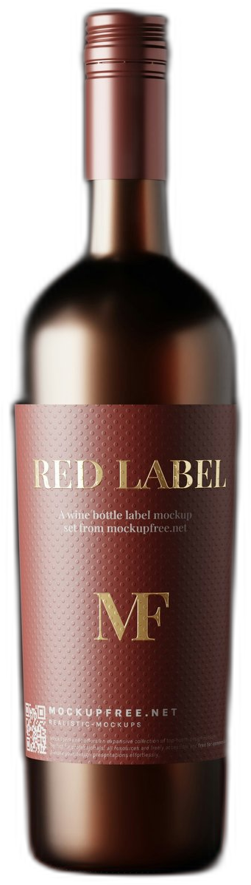
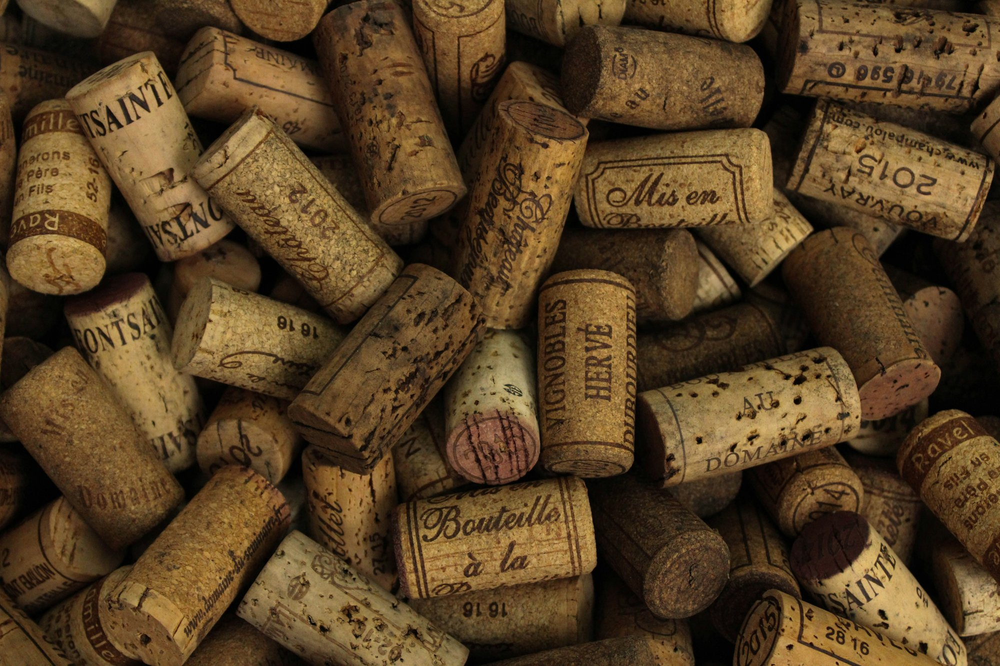
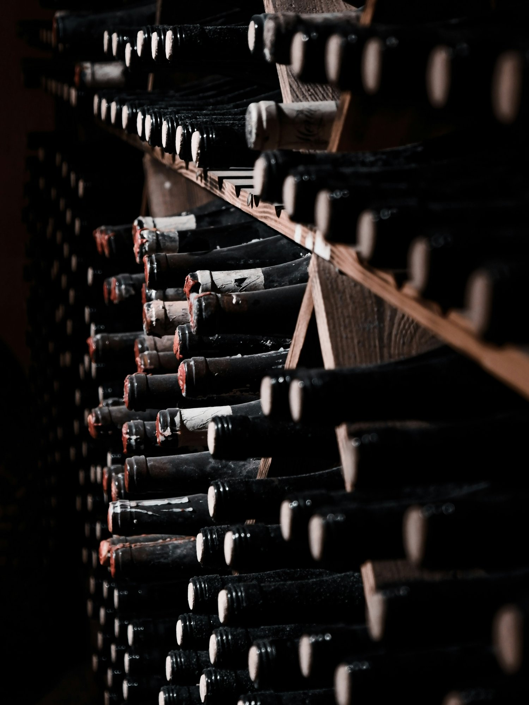
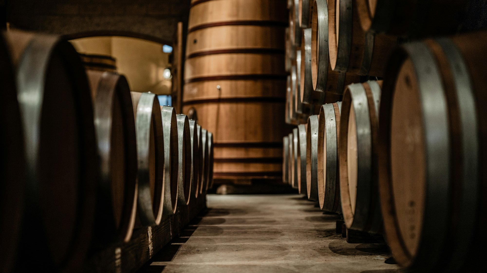
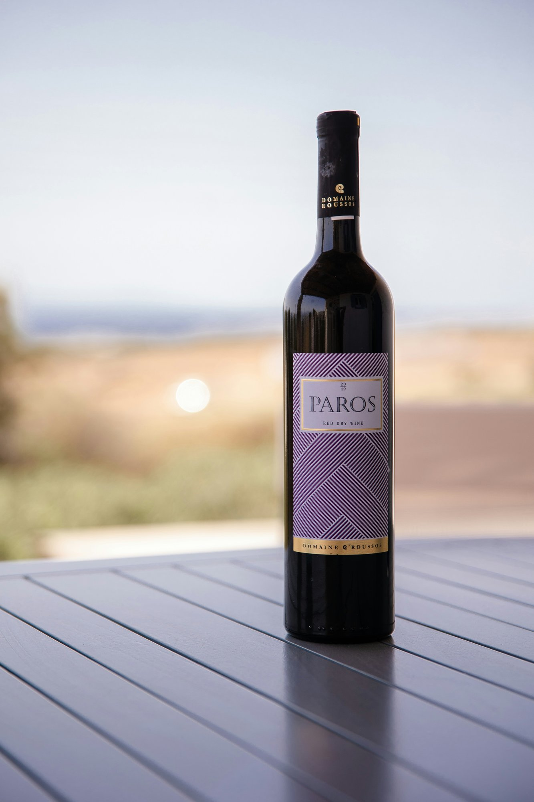
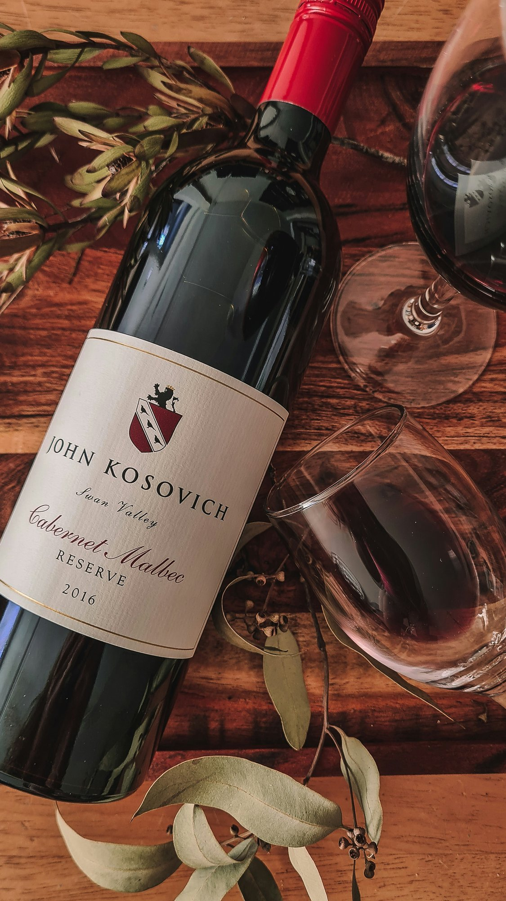
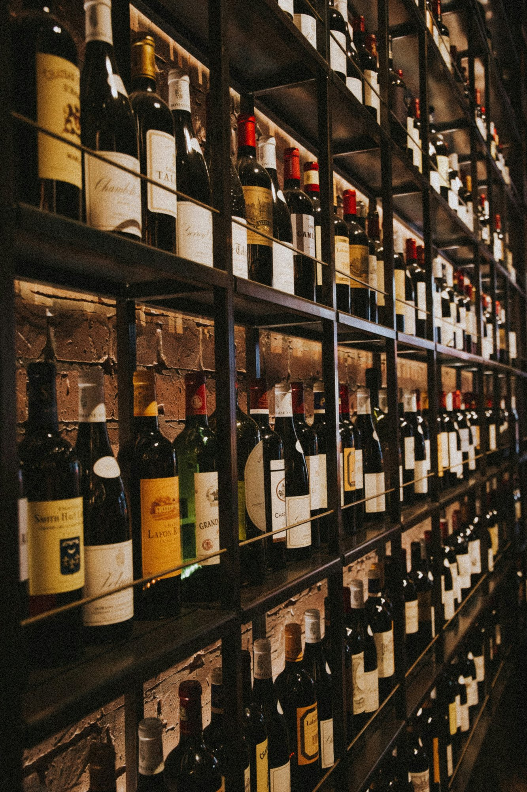
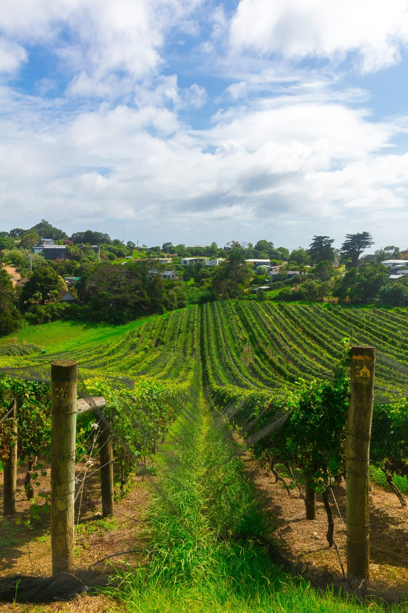

Vinhos finos de altitude · desde 1987
I · Manifesto

II · O Terroir
Basalto vulcânico, noites frias e a névoa que sobe o vale ao amanhecer. Aqui a uva amadurece devagar — e é dessa espera que nasce a acidez viva dos nossos vinhos.

III · Nossa História
Chegamos ao vale em 1987, quando ninguém acreditava em vinho fino no alto da serra. Plantamos assim mesmo — três hectares de Pinot Noir e uma teimosia de família.
Hoje a terceira geração assina cada rótulo, e as garrafas descansam na adega o tempo que pedirem. Pressa, aqui, não entra.

{ ✦ }
IV · Os Vinhos
três capítulos de uma mesma montanha
Capítulo III · Branco · 2023
colhido à noite, sob a névoa

Flor branca✦Pêssego✦Pedra molhada
Chardonnay de parcela única · 40 caixas por safra
R$ 129
V · A Experiência
Degustação guiada na adega, harmonização com queijos da serra e o pôr do sol mais alto de Santa Catarina. Saia com a taça — e fique para ver a névoa subir.
Sextas e sábados · 10h às 18h
Estrada do Contestado, km 18 · São Joaquim — SC
Grupos de até 12 pessoas



O vinhedo em janeiro, a cinco minutos da adega